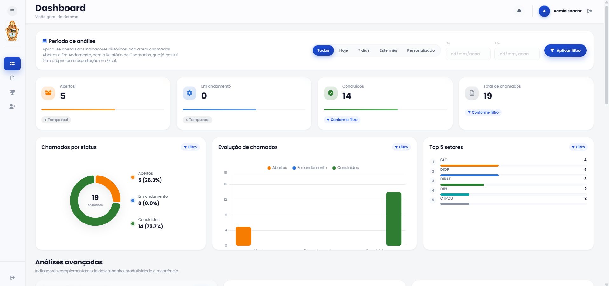
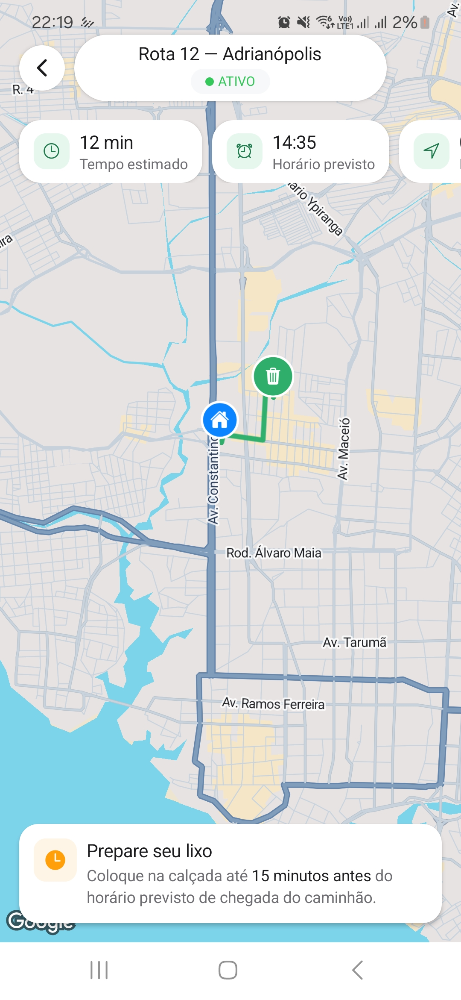

Em produção | Desenvolvimento contínuo

Sistema de Chamados de TI
Plataforma para abertura, acompanhamento e gestão de chamados de TI.
Minha atuação: back-end
Estudante de Ciência da Computação em Manaus, construindo sistemas pelo lado de dentro: regras de negócio, APIs, bancos de dados e a arquitetura que sustenta tudo isso funcionando junto.

Sou desenvolvedor Back-End em formação, desenvolvedor Android e estudante de Ciência da Computação, com foco na construção de APIs REST seguras, organizadas e escaláveis.
Tenho maior domínio em Python, utilizando FastAPI para desenvolvimento de APIs, além de experiência com modelagem de dados, autenticação JWT, versionamento com Git e bancos de dados PostgreSQL.
Também possuo conhecimento inicial em Java e atualmente estou aprofundando meus estudos na linguagem e em seu ecossistema para desenvolvimento de aplicações back-end. Além disso, desenvolvo aplicações Android utilizando Kotlin, criando interfaces modernas e integrando aplicações com APIs.
Tenho interesse em arquitetura de sistemas e no desenvolvimento de soluções de software bem estruturadas, escaláveis e de alta qualidade.
Python, FastAPI, JWT, APIs REST
PostgreSQL, modelagem
Kotlin, interfaces & integração com APIs
Fora do teclado: canto, jogo futebol, vôlei e tênis de mesa.
Cada entrada aqui é um commit real, não teoria.
Início do curso de Ciência da Computação.
Primeira experiência profissional aplicando back-end no dia a dia.
escrevendo o próximo commit...
Organizada como eu penso nela: por camada, não por ordem alfabética.
Toda API que construo tenta respeitar essa mesma separação de responsabilidades.
Web, mobile ou outro serviço consumindo a API
Endpoints FastAPI, schemas e autenticação via JWT
Lógica isolada dos endpoints, testável e reutilizável
PostgreSQL, modelagem pensada antes do código
Do problema ao deploy, cinco estágios que sempre passo antes de chamar algo de "pronto".
Qual problema real está sendo resolvido, e para quem.
Entidades, relações e o desenho do banco de dados.
API, regras de negócio e integração entre as camadas.
Testar casos reais e de borda antes de confiar no fluxo.
Documentar, versionar no Git e publicar.

Plataforma para abertura, acompanhamento e gestão de chamados de TI.

Aplicativo que mostra em tempo real a localização de caminhões de lixo, pontos de coleta e permite solicitar coleta especial.
Disponível para projetos, estágios e colaborações.
lucianogueira156@gmail.com
Manaus, Amazonas — Brasil
Estudante de Ciência da Computação